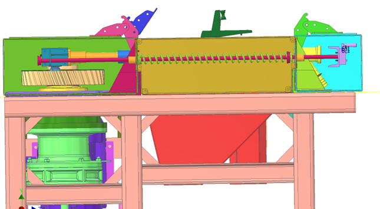
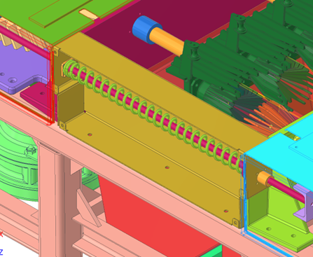

Side-panel actuation housing: linear bearing-guided drive rods, compression spring return, and the plumbing/mechanics that push/pull plungers in a constrained alignment.
Introduction
This subassembly converts yoke-driven motion into controlled core-ejection plunger movement using two parallel drive rods. The rods are guided by flanged linear bearings (LMK16 family in this concept) installed inside side-panel housings. A compression spring provides return force and reduces impact noise via a rubber cushioning interface.
Colour key & components
Rods, bearings, spring return, housings, and side panels that sandwich the juice/splash zones.
Colour(s)
Component
—
Plunger drive rods — two parallel hardened rods driven by yoke actuation.
—
LMK16 linear bearings — guide rods through green housings to preserve alignment.
—
Compression spring + C-clip interface — stores energy during retraction and returns the bracket during compression; the C-clip position is the primary tuning lever for how far plungers retract/clear during the compression stroke.
—
Side panels — folded sheet metal that guides and seals the plunger assembly in the splash/juice zone.
Figures
CAD from Plug-ejection/images/ plus side-panel photos on this page. Refer to Figure 1–Figure 3.


Figure 1. Side-panel housings with LMK16-guided rods and spring return (CAD).
1 / 3
Recommended figures (contractor clarity)
Add figure: C-clip tuning — retract depth vs compression stroke with dimensions.
Add figure: LMK16 housing to panel — seal and washdown drain paths.
Add figure: Spring + rubber stop — stack-up at full retraction (noise/shock).
Discussion
Components
Drive rods — two rods pass through linear bearing housings for parallel guidance.
Linear bearing housings — house LMK16 bearings that align and guide the rods.
C-clip + compression spring — during retraction stroke, the yoke pulls the drive rods, compressing the spring via a C-clip/C-bracket stack.
Rubber cushion — a rubber insert on the spring travel stop to prevent C-clip impacts (noise and shock reduction).
Plunger drive bracket interface — rods connect to the plunger drive bracket to push/pull plungers without introducing moments.
Side panels — folded sheet metal that sandwiches the plungers in the juice/splash zone; loosely fit with sealing between surfaces.
Define how far the plungers retract during the compression stroke by setting C-clip position/stop geometry (contractor to define tuning method and range)
Plunger low-friction sleeve — concept uses a UHMW (food-safe) sleeve around a central rod that contacts the inside of the filter tube to minimize friction and wear.
Scraper — plunger tip scraper clears pulp from the filter tube slot region during retraction, reducing stringy pulp and improving next-cycle efficiency.
O-ring caution — O-rings inside the filter tube may be cut/worn by repeated scraper travel during maintenance; seal strategy is still under research.
Known issues & risks
Racking — if rods/bearings or bracket alignment introduces moment, plungers can rack and jam (critical failure mode).
Leakage + sealing — juice/splash zone sealing between side panels and collection/transmission plates must be repeatable after maintenance.
DFM & manufacturing (China)
Housings + bearing alignment workflow — define an align/ream method that preserves concentricity across maintenance cycles.
Side panels — folded sheet metal assembly; ensure smooth cleanable geometry and sealed interfaces.
Sliding interfaces — if using Delrin/fiber-reinforced engineering plastics (e.g., for guillotine/slide plates), define food safety and wear testing.
Questions for contractor
Confirm the best alignment/assembly plan to keep rod/bearing axes concentric and parallel to filter tube axis.
Propose spring + C-clip interface details that avoid impact damage/noise in washdown duty.
Propose food-safe low-friction materials for plunger sleeves and define acceptable seal approach given scraper travel.
Define sealing strategy between side panels and plates (reusable rubber vs resealable sealant) consistent with maintenance cadence.
Specify a practical method to adjust/set C-clip position (and resulting retract depth) so engaged length and core separation remain within targets across orange types.